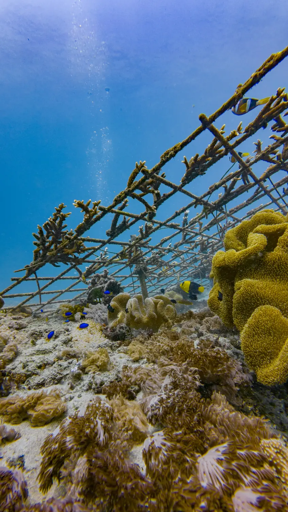

Our approach
We don’t control the ocean. We ask it questions.
- We create the conditions. Then we watch what the reef chooses on its own.
- We never take healthy corals. We rescue broken fragments that would die without help and give them a second chance.
- We bring people in. Travelers, students and kids plant corals and collect real data with us. People protect what they love, and love what they understand.

